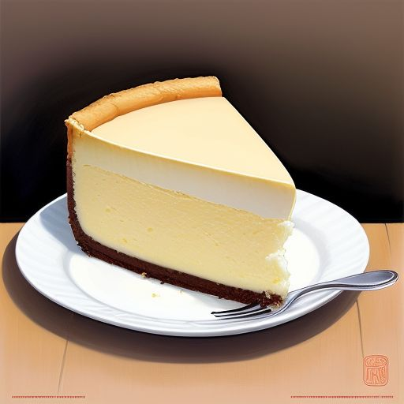

Cheesecake

Description
Savor the timeless delight of Grandma's classic cheesecake.
Nestled on a buttery graham cracker crust, the creamy, smooth filling is rich with the perfect hint of vanilla.
Baked to golden perfection, each slice melts in your mouth, offering a comforting taste of home and tradition.
Simple, elegant, and utterly delicious — just like Grandma used to make.
Ingredients
Graham Crust:
- 1 1/2 cups graham cracker crumbs
- 1/3 cup butter, melted
- 1/4 cup white sugar
Cheesecake:
- 3 packages cream cheese, room temperature
- 1 cup white shugar
- 4 large eggs, room temperature
- 1 tablespoon vanilla extract
- 1 teaspoon cream of tartar
Steps
- Preheat the oven to 350 degrees F.
- For the crust: Combine graham cracker crumbs, melted butter, and sugar in a medium bowl until well mixed. Press the mixture into the bottom and 1/2 inch up the sides of a 9-inch springform pan. Set aside.
- For the cheesecake: In a large bowl, use an electric mixer to blend cream cheese and sugar until smooth. Add eggs, vanilla, and cream of tartar, and mix well. Pour the filling over the crust in the pan.
- Bake in the preheated oven for about 50 minutes, until the center is set. Let it cool on the counter for 5 minutes.
- While the cheesecake is cooling, prepare the topping: In a medium bowl, mix together sour cream, sugar, and vanilla until smooth.
- Pour the topping over the cheesecake, starting at the edges and working towards the center.
- Return the cheesecake to the oven and bake for about 5 minutes, until the topping is set. Let the cheesecake cool in the pan to room temperature, then chill in the refrigerator for at least 6 hours before serving.